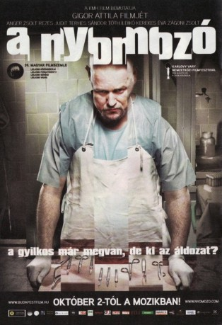

#5537 The Investigator
 
 IMDB-Wertung: 7.6 / 10
IMDB-Wertung: 7.6 / 10  Metascore: 0
Metascore: 0 
Malkáv ist Pathologe. Seine krebskranke Mutter könnte in einer Klinik in Schweden behandelt werden, aber er hat nicht genug Geld, um die Reise und die Operation zu finanzieren. Es sei denn, er nimmt das Angebot des undurchsichtigen Ganoven Cyclops an: Malkáv soll für ihn gegen Bezahlung jemanden töten. Was tun? Malkáv ergreift die Chance und begeht den Auftragsmord – doch zwei Tage später erhält er einen Brief von seinem Opfer. Ein Alptraum beginnt …
Jahr: 2008
Dauer: 112 Minuten
FSK: 16
Land: Ungarn Studio: Schröder MediaTonspuren:
Untertitel:
Auflösung: 1080p (1920x1040) Größe: 12390 MB
Genre: Thriller, Drama, Komödie, Krimi
Regisseur: Attila Gigor
Drehbuch: Roman Coppola
Soundtrack:
Darsteller:
- Judit Lax als Nurse
- Zsolt Anger als Malkáv
- András Márton Baló als Mehtar ben Jaron
- Péter Blaskó als Artúr Kertész
- Csaba Czene als Köpcös
- Kata Farkas als Business woman
- Tamás Fodor als Antiquarian Bookseller
- István Juhász als Schwartz, inspector
- Zsuzsa Járó als Secretary
- Ilona Kassai als Malkáv's mother
- Éva Kerekes als Ágnes Kertész
- Réka Kiss als Girl on bicycle
- Helga Mandel als Notary
- Júlia Nagy als Evike's mother
- Ferenc Pusztai als József Szemben
- Pálma Pusztai als Evike
- Judit Rezes als Edit
- Sebastian Selymes als Svedish professor
- Kornél Simon als Cleric
- Andrea Spolarics als Ildikó, inspector
- Lilla Sárosdi als Cashier
- Zoltán Tamási als Monori
- Réka Tenki als Blonde woman
- Sándor Terhes als Ferenc Szirmai
- Ildikó Tóth als Mrs. Szirmai
- József Tóth als Dr. Zoltán Kutya
- András Vinnai als Cashier
- Katalin Várnagy als Mrs. Gábor
- Zsolt Zágoni als Küklopsz
Datei: X:\2008(G-M)\Investigator, The (2008, FSK16, 1920x1040).mkv seit 14.02.2017
Festplatte: HD 2008(G-Z)-2009(A-F)
 Es gibt insgesamt 73 Filme in der Gruppe '2008(G-M)'
Es gibt insgesamt 73 Filme in der Gruppe '2008(G-M)'